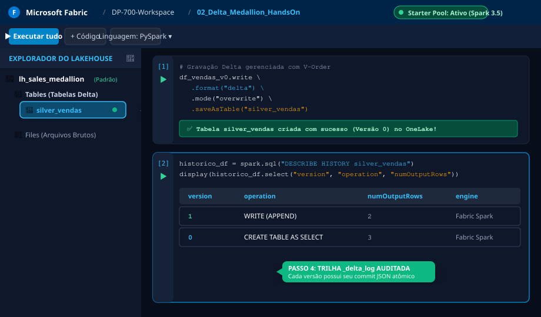
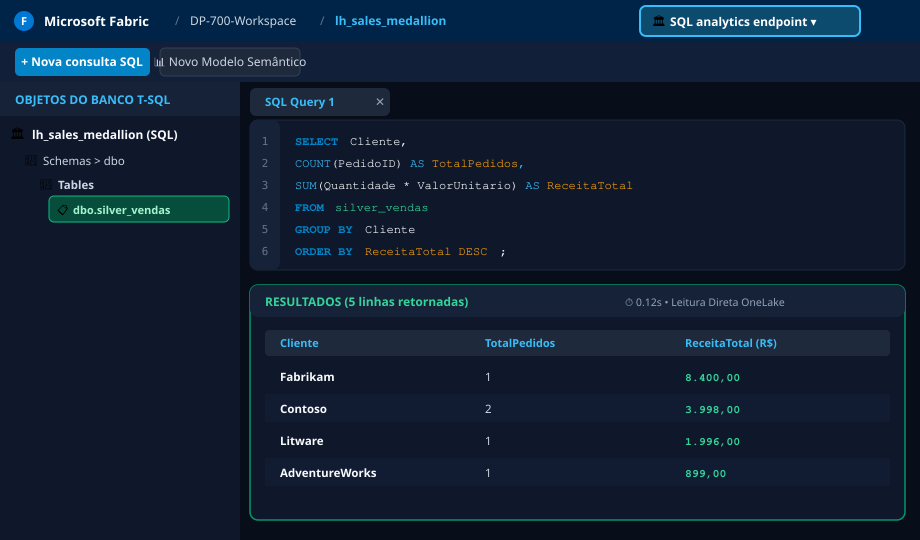

📋 Cenário do Laboratório
Você é o Engenheiro de Dados sênior da Wide World Importers. A diretoria solicitou a modernização do pipeline de vendas corporativo para o Microsoft Fabric. Seu objetivo é provisionar um Lakehouse, ingerir dados transacionais brutos em formato Delta Lake com V-Order habilitado, atualizar registros via transações ACID, consultar versões anteriores com Time Travel, inspecionar os commits no _delta_log e aplicar manutenção de arquivos com OPTIMIZE e VACUUM.
🔑 Pré-requisitos para Execução no Portal
- Navegador web moderno (Edge, Chrome ou Firefox).
- Acesso ao portal Microsoft Fabric (app.fabric.microsoft.com).
- Uma capacidade ativa do Fabric (licença Fabric Trial gratuita de 60 dias ou capacidade F-SKU corporativa).
- Um Workspace configurado no modo de capacidade Fabric.
- Acesse o portal do Microsoft Fabric e efetue login com sua conta organizacional ou de desenvolvedor.
- No canto inferior esquerdo da tela, localize o seletor de experiência e clique no ícone de Engenharia de Dados (Data Engineering).
- No menu de navegação à esquerda, clique em Workspaces e selecione o workspace habilitado para sua capacidade.
- Na barra de comandos superior, clique em + Novo item (+ New item) e selecione o cartão Lakehouse.
- No campo Nome, digite
lh_sales_medallion e clique no botão Criar.
- Aguarde alguns segundos até que o Lakehouse Explorer seja carregado com as pastas
Tables e Files.
🔒 https://app.fabric.microsoft.com/groups/dp700-workspace/lakehouses/new

📸 Captura do Portal 1: Selecionando a experiência de Engenharia de Dados (canto inferior esquerdo) e criando o Lakehouse lh_sales_medallion.
- Na barra de ferramentas superior do Lakehouse, clique em Abrir notebook (Open notebook) > Novo notebook (New notebook).
- No painel esquerdo do Notebook, confirme que o lakehouse
lh_sales_medallion está selecionado como o Lakehouse padrão ativo.
- No canto superior esquerdo da tela do Notebook, clique sobre o nome padrão (ex: Notebook 1) e renomeie para:
02_Delta_Medallion_HandsOn.
- Observe que o ambiente Spark do Fabric inicializa instantaneamente via Starter Pools com alocação automática de núcleos.
Cole o código PySpark abaixo na primeira célula do seu notebook para simular a ingestão da camada Bronze e gravá-la como tabela gerenciada Delta Lake com ordenação V-Order:
from pyspark.sql.types import StructType, StructField, StringType, IntegerType, DoubleType
# 1. Definição do esquema estrito dos pedidos
schema_vendas = StructType([
StructField("PedidoID", IntegerType(), False),
StructField("Cliente", StringType(), False),
StructField("Produto", StringType(), False),
StructField("Quantidade", IntegerType(), False),
StructField("ValorUnitario", DoubleType(), False),
StructField("DataPedido", StringType(), False)
])
# 2. Carga inicial de dados simulados (Commit V0)
dados_lote_1 = [
(101, "Contoso", "Surface Laptop Studio", 2, 1999.00, "2026-01-10"),
(102, "Fabrikam", "Licença Fabric F64", 1, 8400.00, "2026-01-11"),
(103, "Litware", "Xbox Series X Console", 4, 499.00, "2026-01-12")
]
df_vendas_v0 = spark.createDataFrame(dados_lote_1, schema_vendas)
# 3. Gravação da tabela Delta gerenciada com V-Order habilitado no OneLake
df_vendas_v0.write \
.format("delta") \
.mode("overwrite") \
.option("overwriteSchema", "true") \
.saveAsTable("silver_vendas")
print("✅ Tabela silver_vendas criada com sucesso (Versão 0) no OneLake!")
- Pressione Shift + Enter (ou clique no botão de Play da célula) para executar o código.
- Após a conclusão da célula, vá até o painel esquerdo Lakehouse Explorer, passe o mouse sobre a pasta Tables e clique no botão de atualizar (🔄).
- Verifique que a tabela
silver_vendas agora aparece com o símbolo triangular oficial do Delta Lake.
Em uma nova célula de código, vamos inserir novos pedidos (operação de Append, gerando o Commit V1) e em seguida inspecionar os metadados ACID com o comando DESCRIBE HISTORY:
# 1. Novos registros para o segundo lote de ingestão
dados_lote_2 = [
(104, "AdventureWorks", "Headset Microsoft Teams", 10, 89.90, "2026-01-15"),
(105, "Northwind", "Monitor 4K 32 polegadas", 3, 650.00, "2026-01-16")
]
df_novos_pedidos = spark.createDataFrame(dados_lote_2, schema_vendas)
# 2. Append atômico garantido pelo protocolo Delta
df_novos_pedidos.write.format("delta").mode("append").saveAsTable("silver_vendas")
print("✅ Lote 2 gravado com sucesso (Commit V1)!")
# 3. Inspeção dos metadados e histórico atômico do _delta_log
historico_df = spark.sql("DESCRIBE HISTORY silver_vendas")
display(historico_df.select("version", "timestamp", "operation", "operationMetrics.numOutputRows", "userName"))
- Execute a célula e analise o grid de resultados gerado pelo comando
display().
- Observe as duas versões registradas:
- Versão 0: Operação
CREATE OR REPLACE TABLE AS SELECT (3 linhas adicionadas).
- Versão 1: Operação
WRITE (2 linhas adicionadas).
- Isso comprova que cada transação gera um arquivo
.json imutável e sequencial na pasta oculta _delta_log/ do OneLake.
🔒 https://app.fabric.microsoft.com/groups/dp700-workspace/synapsenotebooks/02_Delta_Medallion_HandsOn

📸 Captura do Portal 2: Lakehouse Explorer com a tabela silver_vendas (painel esquerdo) e saída tabular do DESCRIBE HISTORY com auditoria dos commits V0 e V1.
Uma das capacidades mais exigidas no exame DP-700 é consultar o estado exato de uma tabela em um ponto específico do passado sem restaurar backups. Crie uma nova célula:
# Consulta 1: Consultando a Versão 0 original (antes do Lote 2)
print("=== ESTADO NA VERSÃO 0 (3 REGISTROS ESPERADOS) ===")
df_v0 = spark.read.format("delta").option("versionAsOf", 0).table("silver_vendas")
display(df_v0)
# Consulta 2: Consultando a Versão Atual (HEAD)
print("=== ESTADO ATUAL / HEAD (5 REGISTROS ESPERADOS) ===")
df_atual = spark.table("silver_vendas")
display(df_atual)
# Consulta 3: Sintaxe alternativa nativa via SQL Spark
spark.sql("SELECT COUNT(*) AS Total_V0 FROM silver_vendas VERSION AS OF 0").show()
spark.sql("SELECT COUNT(*) AS Total_Atual FROM silver_vendas").show()
- Execute a célula e confira que a consulta com
versionAsOf = 0 isola exatamente o snapshot original da tabela, enquanto a leitura padrão reflete todas as transações comitadas.
Em ambientes de produção com ingestão contínua, múltiplos arquivos pequenos de poucos kilobytes degradam a velocidade das consultas. Execute a manutenção:
%%sql
-- 1. Compactação de arquivos pequenos via Bin-Packing (1GB alvo)
OPTIMIZE silver_vendas;
-- 2. Limpeza de arquivos antigos marcados para expurgo (Retenção recomendada de 7 dias = 168h)
VACUUM silver_vendas RETAIN 168 HOURS;
⚠️ Pegadinha Crítica para o Exame DP-700:
O comando OPTIMIZE apenas agrupa e compacta arquivos pequenos; ele não apaga o histórico do _delta_log. Por outro lado, o comando VACUUM remove fisicamente do OneLake os arquivos de dados Parquet que foram desativados (tombstoned) há mais tempo do que a janela de retenção especificada. Se um analista tentar rodar um Time Travel em uma versão cujos arquivos foram purgados pelo VACUUM, a consulta falhará com erro FileNotFoundException.
- No canto superior direito da janela do Microsoft Fabric, clique no botão alternador que exibe Lakehouse e selecione Ponto de extremidade de análise SQL (SQL analytics endpoint).
- Aguarde a inicialização do motor relacional T-SQL.
- No painel de navegação à esquerda, expanda Esquemas >
dbo > Tabelas e selecione silver_vendas.
- Clique no botão Nova consulta SQL na barra superior e cole o comando T-SQL abaixo:
-- Consulta analítica T-SQL sobre os mesmos arquivos Delta do OneLake
SELECT
Cliente,
COUNT(PedidoID) AS TotalPedidos,
SUM(Quantidade * ValorUnitario) AS ReceitaTotal,
AVG(ValorUnitario) AS TicketMedio
FROM silver_vendas
GROUP BY Cliente
ORDER BY ReceitaTotal DESC;
- Clique em Executar (Run). Observe que a consulta relacional é executada em milissegundos sem que nenhum dado tenha sido copiado ou importado do Lakehouse!
🔒 https://app.fabric.microsoft.com/groups/dp700-workspace/datawarehouses/lh_sales_medallion_sql

📸 Captura do Portal 3: Alternador no canto superior direito apontando para o SQL analytics endpoint e consulta T-SQL sobre os arquivos Delta com resultado Zero-Copy.
💻 Opção Alternativa: Executar Simulação Local Offline no seu Terminal
Sem necessidade de conta Fabric
Se você não possui uma assinatura ativa do Fabric no momento, criamos um simulador completo em Python no seu repositório local que reproduz a criação dos commits JSON e arquivos Parquet na pasta _delta_log:
# Execute este comando no terminal para reproduzir o lab:
./.venv/bin/python labs/0002-parquet-delta-medallion/lab_simulation.py
📁 Estrutura gerada para auditoria local: labs/0002-parquet-delta-medallion/silver_delta/_delta_log/